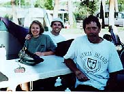

|
Home |
Introduction |
Facts & Answers |
Journal Days 1-10 |
| Journal Days11-20 |
| Journal Days21-30 |
| Journal Days31-37 |
| Journal Days37-47 |
| Journal Days48-58 |
| Journal Days59-70 |
| Final Days |
Bike Ride USA Journal
Day 11 Cambridge to Riggins. 79 miles. Climbed Tamerach Hill a 4 mile climb. I tried Ibuprofen
|  |
| Last day with Mellisa Dan and Bill
|
today for the first time and my knees and ankle felt great. I saw Jen and Steph today. They were in New Meadows
getting a massage and some TLC. Stephs knees were hurting her and she needed some time. Jen and I had a good
talk about life. I saw Jake on the road again. He was talking to another 2 bikers going the other way. One
was going to meet the 6 testosterone guys the other was just a solo cyclist. Crossed into Idaho and it is
beautiful. Camped in RV park with Bill. Melissa and Dan have broken off route and headed to Yellowstone. I
will miss them.
Day 12 Riggins to Grangeville. I am sick, my knees are still a bit sore, it is colder than sh_t and
it raining. WhiteBird Hill was today. It was 8 miles at a 7% grade. When I got to Grangeville I stopped to
ask directions to the campground calling it a day after only 40 miserable but beautiful miles. I asked a guy
outside working in his yard. He looked at me, felt sorry for me and then said, I have an extra room and a hot
tub, you are welcome to stay here for the night. Chuck, Margaret, friend Terry and Trish and cat Sushi. I
also go a massage that night since his wife was a massage therapist. I got a good night sleep. A 40 mile day
that hurt like heck but well worth due to the TLC I received.
Day 13 Grangeville to Wilderness Gateway. 65 miles. The ride was was incredible. For about 20 miles
the ride was flat and followed a river through the mountains. I had to stop several times to just sit and admire
where I was and what I was doing. The campground I am staying at has a country western jam. People from all over the country came to see and take part in this 5 day event. I met up with Rex and Frances a retired couple who gave me some food that night because I got so wrapped up in the scenery I
forgot to go shopping. They supplied me with hot dogs and Kool Aid powder. There are several squirrel and
snakes inhabiting my sight. The Biker Gang camped out that night too. It rained all night.
Day 14 Gateway to Powel 40 miles. Rex and Francis had breakfast ready for me as I was leaving. Eggs,
Bacon and Melon. Stopped at the Jerry Johnson Hot Springs for a bath. Off road with about a 2 mile hike was
a group of natural springs. Camped that night with Bill and Richard a 53 year old guy who is traveling across
the states. The 3 of us had dinner that night at the camp cafe, and met up with the Richard the doctor. The 4
of us had a few beers but were interrupted by the rain. We had to run back to our tents turning in early.
Day 15 Powel to Missoula. It is raining now at 7 am. At 9 am it is still raining but I am taking
off. I got to Missoula at 2:00 and thank god the last 20 miles were down hill. I has been raining all day
and has caused major league road rash to develop. I got to Missula at 2:00 and the Hostel does not let
anyone in until 5. I ended up today doing laundry at Jays A laundromat/Bar. The crowd was tough but they
were clean. I again ran into the biker gang who were going to separate. They were getting a bit tired of
hanging out with one another. Today was my last day on the Bicentennial Route. A Cross Country route set up by Adventure Cycling Based in Missoula. Adventure Cycling Tour Maps I doubt I will run into
many more bikers for the rest of the trip since most everyone I have met is following the route.
Day 16 Hung out in Missoula and got a rainfly for my tent. I could not stand another night of a wet
tent.
Day 17 50 miles from Missoula to St Igneses. This was a wasted day. I went to meet up with a
guy who tentatively would show me around Glacier Park via car. He never showed so I headed back and
stayed at a great little campground w/ running water and grass sites, and a stream going through the
middle.
The owner came over to my site first to take my money and we ended up talking for a while. He asked me
about other campgrounds and what I felt was the difference between the good and bad ones. After staying
in a few bad campgrounds, it was nice to stay in a place that the owner cared so much about.
Day 18 67 miles to Clearwater Campground. . I went off the beaten path today following the
road map and not the bike maps. It was nerve racking since road maps don't show elevations nor where
are the campgrounds (Only Forest Service Campgrounds are indicated on the map and those seldom have
showers) I really have a sad feeling of being on my own. It is kinda lonely and I started wondering
if I should have gone off the Bicentennial route. While I was stopped for lunch, I heard that there
were no showers at the campground to where I was headed, so 2 miles before camp I stopped at a public
shower. Ran out of #%/-@%&. quarters. All lathered up. had to go upstairs to the cafe, pass many people,
and get more quarters.
|
|
| Could life get any better? |
Day 19 Clearwater to Helena. 83 miles. Hwy 279 had a 2000 ft climb over Stemple Pass
(The Great Divide) elevation 6378. It's all down hill from here baby. By the time I got to Helena
the closest Campground was 5 miles from town. I figured I could do better on my own so at about 2 miles
from town I asked a church if I could camp on there back lot. I also asked where I could shower.
The Pastor offer me his home shower. I showered in the house and camped behind the Baptist Church.
I am assuming it was safe. There names were Rus and Anne. He will retire in August from the Pastorship
and move to Florida. I was too tired to go to town to eat so I just stopped at the first place I saw.
All you can eat pizza.
Day 20 Helena to White Sulphur Springs 77 miles. I would have made a journal entry at Helena
but this small town stuff of opening up the library at 3:00 killed me. Heck this is the capitol of Montana.
I hopped the Library would be a little real world. Today was a super long day of riding. I started late
because I wanted to hang out in town for a while since Helena was an awesome place. Very historic with
both modern and western buildings. Downtown had that small town feel however it went on for blocks. I
had coffee and read the paper. Go Giants! Second place and holding. I biked though an area called Deep
Creek. It was beautiful, wondering through a deep valley following and winding stream ( Sorry,"Crek" as
they say out here) The problem was that the ride was upstream, creek grade, and against the wind. I must
have been moving about 5-6 mph and earning each mile. I had to stand up and peddle like hell to stop
the flies from landing on me. As soon as I got back to normal speed, they landed on me again. After
about 65 miles into the ride I was faced a dilemma. Sulphur Springs was 9 miles in a different direction
than I wanted to go. Where I wanted to go that had nothing/nada/zippo for 25 miles. It was already 6:00
and I was tired. I broke and went to Sulphur. Since the campground was not crowded and a storm was moving
in the owner let me sleep in the camp TeePee. I must have pick this "on-your-own route" to clear my head
or for some other deep reason, because I am really questioning this decision.
|